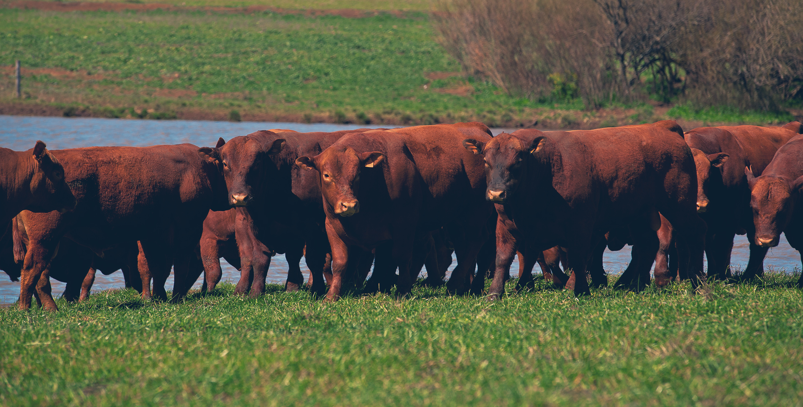

A NARRI tem mais de 45 anos de experiência quando o assunto é levar qualidade até o seu lar, no Rio Grande do Sul e no mundo todo. Temos reconhecimento no mercado Internacional e nacional em função da excelente qualidade de nossa carne.
Contamos com uma moderna planta industrial situada em Gramado, no Rio Grande do Sul, o que, estrategicamente, nos permite um cuidadoso processo de aquisição de matéria-prima, abate e logística de transporte, proporcionando assim a precisão na entrega de nossos produtos aos consumidores em todo o território nacional.
Por estar localizados ao sul do Brasil, podemos adquirir carnes de grandes raças. Trabalhamos com animais de raças terminados a pastos do Bioma Pampa, também conhecidos como Argentinos ou Sulinos, o que confere a qualidade da carne.
Web Developer - Isaac Soares
Copyright Frigorífico Narri© 2023. All rights Reserved.